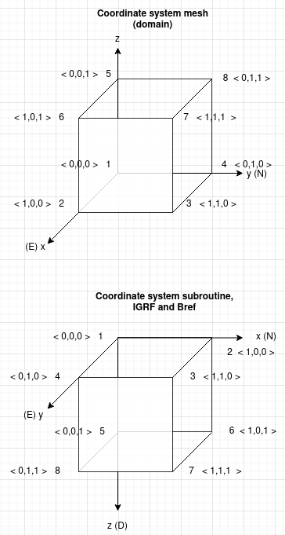

Coordinate systems of different components¶
Figure 13 illustrates the different coordinate systems within the model. The system used for the domain and all related parameters (i.e. mag, positions) is displayed at the top, at the bottom the orientation system in consistent with the subroutine, but also intentionally the same as IGRF and Bref (field measurements): Northing (x), Easting (y), Downing (z). In hindsight, the same system for the mesh/domain would be desirable. Nonetheless, a simple transformation as included in the code suffices.

Figure 13 Coordinate systems of different components in this study.¶